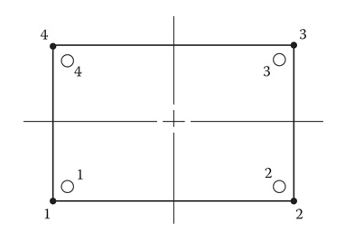
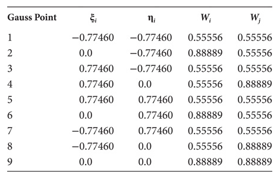
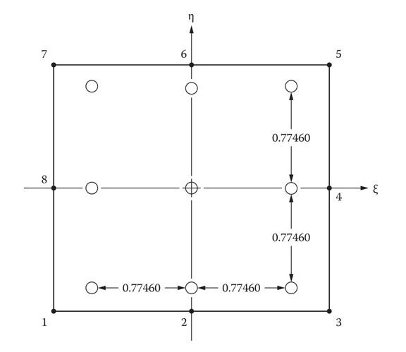

La formulación de las integrales en términos de $\xi$ y $\eta$ permite plantear las ecuaciones con límites de integración simples. Esto es particularmente práctico cuando tenemos fronteras curvas o fornteras que no son paralelas a los ejes de coordenadas.
Las integrales se definen como:
$$\int\limits_{-a}^{a}\int\limits_{-b}^{b}F(x,y)dxdy = \int\limits_{-1}^{1}\int\limits_{-1}^{1}f(\xi,\eta)|\mathbf{J}|d\xi d\eta$$La matriz de conducción se convierte en:
$$\mathbf{K}^{(e)} = \iint\limits_{\Omega^{(e)}}K\left[ \dfrac {\partial N_i} {\partial x}\dfrac {\partial N_j} {\partial x} + \dfrac {\partial N_i} {\partial y}\dfrac {\partial N_j} {\partial y} \right]dxdy$$$$\mathbf{K}^{(e)} =\int\limits_{-1}^{1}\int\limits_{-1}^{1} K\left[ \dfrac {\partial N_i} {\partial \xi}\dfrac {\partial N_j} {\partial \xi} + \dfrac {\partial N_i} {\partial \eta}\dfrac {\partial N_j} {\partial \eta} \right]|\mathbf{J}|d\xi d\eta$$Donde las derivadas se pueden obtener de las funciones de forma utilizadas.
La integral del producto $N_iN_j$ se convierte en:
$$\iint\limits_{\Omega^{(e)}} N_i N_j dxdy = \int\limits_{-1}^{1}\int\limits_{-1}^{1} N_i N_j |\mathbf{J}|d\xi d\eta$$La integral del lado derecho no se trata ya de polinomios simples y debido al término $1/|\mathbf{J}|$ las derivadas con respecto a $\xi$ y $\eta$ pueden ser problemáticas. Al igual que con los elementos triangulares el método más común para resolver numericamente estas integrales es usar la Cuadratura de Gauss.
Este método aproxima el valor de una integral con una suma ponderada sobre un número finito de puntos. Para estos elementos usamos:
$$\int\limits_{-1}^{1}\int\limits_{-1}^{1} N_i N_j d\xi d\eta \cong \sum_{i=1}^N\sum_{j=1}^N W_i W_j f(\xi_i, \eta_i)$$El valor de $N$ dependerá del máximo exponente que exista para $\xi$ y $\eta$ en la expresión: podemos integrar exactamente un polinomio de grado $2N-1$.
Para un elemento bilinear podemos utilizar, con $N=2$:
| Punto | $\xi_i$ | $\eta_j$ | $W_i$ | $W_j$ |
|---|---|---|---|---|
| $1$ | $-1/\sqrt{3}$ | $-1/\sqrt{3}$ | $1$ | $1$ |
| $2$ | $1/\sqrt{3}$ | $-1/\sqrt{3}$ | $1$ | $1$ |
| $3$ | $1/\sqrt{3}$ | $1/\sqrt{3}$ | $1$ | $1$ |
| $4$ | $-1/\sqrt{3}$ | $1/\sqrt{3}$ | $1$ | $1$ |

Para elemento cuadrático de 8 nodos, con $N=3$:


Ejercicio:
Integrar numérica y analíticamente la expresión:
$$\int\limits_{-1}^1 \int\limits_{-1}^1 9 \xi^2 \eta^2 d\xi d\eta$$